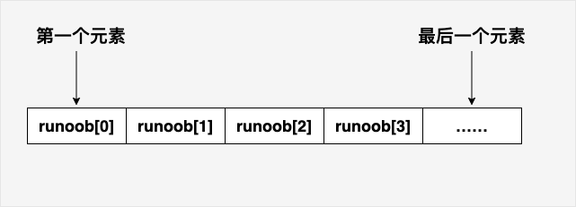
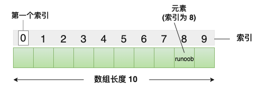
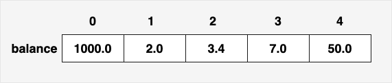

C 数组
C 语言支持数组数据结构，它可以存储一个固定大小的相同类型元素的顺序集合。数组是用来存储一系列数据，但它往往被认为是一系列相同类型的变量。
数组的声明并不是声明一个个单独的变量，比如 runoob0、runoob1、...、runoob99，而是声明一个数组变量，比如 runoob，然后使用 runoob[0]、runoob[1]、...、runoob[99] 来代表一个个单独的变量。
所有的数组都是由连续的内存位置组成。最低的地址对应第一个元素，最高的地址对应最后一个元素。

数组中的特定元素可以通过索引访问，第一个索引值为0。
C 语言还允许我们使用指针来处理数组，这使得对数组的操作更加灵活和高效。

声明数组
在 C 中要声明一个数组，需要指定元素的类型和元素的数量，如下所示：
type arrayName [ arraySize ];
这叫做一维数组。arraySize必须是一个大于零的整数常量，type可以是任意有效的 C 数据类型。例如，要声明一个类型为 double 的包含 10 个元素的数组balance，声明语句如下：
double balance[10];
现在balance是一个可用的数组，可以容纳 10 个类型为 double 的数字。
初始化数组
在 C 中，您可以逐个初始化数组，也可以使用一个初始化语句，如下所示：
double balance[5] = {1000.0, 2.0, 3.4, 7.0, 50.0};
大括号 { } 之间的值的数目不能大于我们在数组声明时在方括号 [ ] 中指定的元素数目。
如果您省略掉了数组的大小，数组的大小则为初始化时元素的个数。因此，如果：
double balance[] = {1000.0, 2.0, 3.4, 7.0, 50.0};
您将创建一个数组，它与前一个实例中所创建的数组是完全相同的。下面是一个为数组中某个元素赋值的实例：
balance[4] = 50.0;
上述的语句把数组中第五个元素的值赋为 50.0。所有的数组都是以 0 作为它们第一个元素的索引，也被称为基索引，数组的最后一个索引是数组的总大小减去 1。以下是上面所讨论的数组的的图形表示：

下图是一个长度为10的数组，第一个元素的索引值为0，第九个元素runoob的索引值为8:
访问数组元素
数组元素可以通过数组名称加索引进行访问。元素的索引是放在方括号内，跟在数组名称的后边。例如：
double salary = balance[9];
上面的语句将把数组中第 10 个元素的值赋给 salary 变量。下面的实例使用了上述的三个概念，即，声明数组、数组赋值、访问数组：
实例
当上面的代码被编译和执行时，它会产生下列结果：
Element[0] = 100 Element[1] = 101 Element[2] = 102 Element[3] = 103 Element[4] = 104 Element[5] = 105 Element[6] = 106 Element[7] = 107 Element[8] = 108 Element[9] = 109
获取数组长度
数组长度可以使用sizeof运算符来获取数组的长度，例如：
int numbers[] = {1, 2, 3, 4, 5};
int length = sizeof(numbers) / sizeof(numbers[0]);
实例
int main() {
int array[] = {1, 2, 3, 4, 5};
int length = sizeof(array) / sizeof(array[0]);
printf("数组长度为: %d\n", length);
return 0;
}
使用宏定义：
实例
#define LENGTH(array) (sizeof(array) / sizeof(array[0]))
int main() {
int array[] = {1, 2, 3, 4, 5};
int length = LENGTH(array);
printf("数组长度为: %d\n", length);
return 0;
}
以上实例输出结果为：
数组长度为: 5
数组名
在 C 语言中，数组名表示数组的地址，即数组首元素的地址。当我们在声明和定义一个数组时，该数组名就代表着该数组的地址。
例如，在以下代码中：
int myArray[5] = {10, 20, 30, 40, 50};在这里，myArray 是数组名，它表示整数类型的数组，包含 5 个元素。myArray 也代表着数组的地址，即第一个元素的地址。
数组名本身是一个常量指针，意味着它的值是不能被改变的，一旦确定，就不能再指向其他地方。
我们可以使用&运算符来获取数组的地址，如下所示：
int myArray[5] = {10, 20, 30, 40, 50};
int *ptr = &myArray[0]; // 或者直接写作 int *ptr = myArray;在上面的例子中，ptr 指针变量被初始化为 myArray 的地址，即数组的第一个元素的地址。
需要注意的是，虽然数组名表示数组的地址，但在大多数情况下，数组名会自动转换为指向数组首元素的指针。这意味着我们可以直接将数组名用于指针运算，例如在函数传递参数或遍历数组时：
实例
for (int i = 0; i < size; i++) {
printf("%d ", arr[i]); // 数组名arr被当作指针使用
}
}
int main() {
int myArray[5] = {10, 20, 30, 40, 50};
printArray(myArray, 5); // 将数组名传递给函数
return 0;
}
在上述代码中，printArray 函数接受一个整数数组和数组大小作为参数，我们将 myArray 数组名传递给函数，函数内部可以像使用指针一样使用 arr 数组名。
C 中数组详解
在 C 中，数组是非常重要的，我们需要了解更多有关数组的细节。下面列出了 C 程序员必须清楚的一些与数组相关的重要概念：
| 概念 | 描述 |
|---|---|
| 多维数组 | C 支持多维数组。多维数组最简单的形式是二维数组。 |
| 传递数组给函数 | 您可以通过指定不带索引的数组名称来给函数传递一个指向数组的指针。 |
| 从函数返回数组 | C 允许从函数返回数组。 |
| 指向数组的指针 | 您可以通过指定不带索引的数组名称来生成一个指向数组中第一个元素的指针。 |
| 静态数组与动态数组 | 静态数组在编译时分配内存，大小固定，而动态数组在运行时手动分配内存，大小可变。 |
HBR1
238***9419@qq.com
指针与数组的区别
字符数组:
字符串指针:
得出结论字符数组的 首地址可以用 arrgs ，&arrgs,来表示并且它们相等，
但是指针&str和str是不同的,当遇到字符串指针时候要注意处理方式;
HBR1
238***9419@qq.com
喵帕斯
115***2452@qq.com
一个小知识点：
在我们没有明确数组的元素个数时，在程序中想知道数组单元个数可以使用sizeof(a)/sizeof(a[0]), sizeof(a)是得到数组 a 的大小，sizeof(a[0])是得到数组 a 中单个元素的大小（因此可以不必要是a[0],a[i]都行），eg:
#include<stdio.h> int main(int argc,char *grgv[]) { int a[]={1,2,3,4,5}; int b; b=sizeof(a)/sizeof(a[0]); printf("数组元素个数为：%d",b); return 0; }喵帕斯
115***2452@qq.com
流浪天涯
223***9389@qq.com
数组是一种一次申请多个变量的方法，数组的使用让我们可以在程序中保留多个变量的值，进行处理，例如给定n个学生的成绩，要求有多少学生超过了平均分,代码如下：
#include <stdio.h> //导如输入输出头文件 int main(){ //主函数 int cj[100]={0};//定义数组 int n; int count=0;//定义计数器，统计有多少人达到平均分 scanf("%d",&n); int i=0; //读入数据 for(i=0;i<n;i++){ scanf("%d",&cj[i]); } //对数据进行求和 double sum=0; for(i=0;i<n;i++){ sum+=cj[i]; } //求平均分 double arg=sum/n; //判断有多少人达到平均分； for(i=0;i<n;i++){ if(cj[i]>arg){ count++; } } //输出平均分和人数 printf("平均分为：%0.2f\n超过平均分的人有：%d个\n",arg,count); return 0; }流浪天涯
223***9389@qq.com
沂圆束潇
953***815@qq.com
#include <stdio.h> int main() { int a[2] = {1,2}; printf("a = %d\n",a[0]); printf("*(a+0) = %d\n",*(a + 0)); printf("a[1] = %d\n",a[1]); printf("*a = %d\n",*a); printf("*(a+1) = %d\n",*(a + 1)); printf("\n"); printf("a 的地址：%p\n",a); printf("(a+0)的地址：%p\n",(a + 0)); printf("(a+1)的地址：%p\n",(a + 1)); // %p 读入一个指针 printf("\n"); return 0; }输出结果：
事实上 a[0] 、a[1]...a[i]代表的都是值，a、(a+0)、(a+1)、(a+i)代表的是地址；另外这里的a代表整个数组的首地址，相当于a[0]的地址，而这里(a+1)就代表的是 a[0+1]的地址。
正如文章中提到的：所有的数组都是由连续的内存位置组成。最低的地址对应第一个元素，最高的地址对应最后一个元素，即是说(a+i)就代表的是a[0+i]的地址。
沂圆束潇
953***815@qq.com
布克F91
335***443@qq.com
对于数组的初始化需要注意以下几点：
1) 可以只给部分元素赋值，当{ }中值的个数少于元素个数时，只给前面部分元素赋值。例如：
int a[10]={12, 19, 22 , 993, 344};表示只给a[0]~a[4] 5个元素赋值，而后面5个元素自动初始化为0。
当赋值的元素少于数组总体元素的时候，不同类型剩余的元素自动初始化值说明如下：
我们可以通过下面的形式将数组的所有元素初始化为 0：
int nums[10] = {0}; char str[10] = {0}; float scores[10] = {0.0};由于剩余的元素会自动初始化为 0，所以只需要给第 0 个元素赋值为 0 即可。
2) 只能给元素逐个赋值，不能给数组整体赋值。例如给 10 个元素全部赋值为 1，只能写作：
int a[10] = {1, 1, 1, 1, 1, 1, 1, 1, 1, 1};而不能写作：
布克F91
335***443@qq.com
Jiangang
121***5109@qq.com
指针与数组名的区别
指针：也是一个变量，存储的数据是地址。
数组名：代表的是该数组最开始的一个元素的地址。
区别：指针是一个变量，可以进行数值运算。数组名不是变量，不可以进行数值运算。
Jiangang
121***5109@qq.com
chrislee
cod***hrislee@163.com
数组和指针的关系
int a[]本质是指针 可以直接换成int *a;[]进行运算，而且可以通过a[0]就直接修改了外面的数组元素;size of(a) == sizeof(int *)所以函数内部没法用sizeof得到数组的长度 只能传一个len;// 一个整型数组的指针，长度为 len， 得到数组中的最小值和最大值 ———— 从外部传入两个指针，从而将所求的两个结果保存带出来，得到多个返回值。 void minMax(int a[], int len, int *min, int *max) { int i; *min = *max = a[0]; //假定最大值 最小值相等 为a[0] for(i= 1; i < len, i++) { if( a[i] < *min) { *min = a[i]; } if(a[i] > *max) { *max = a[i]; } } } int a[] = {1, 2, 3, 4, 5, 7, 8, 9, 15, 18, 25, 33}; int min, max; minMax(a, sizeof(a)/ sizeof(a[0]), &min , &max ); printf( "min = %d, max = %d \n", min, max);[]运算符可以对数组做，也可以对指针做p[0] == a[0];*运算符可以对指针做，也可以对数组做*a = 25, *a可以得到或者修改数组首个元素的值;int a[] = {1,2,5,7};int b[]，由于int b[]实质上等价于 <===> int const *b; b 是一个常数，不能被改变，初始化出来代表这个数组就不能再改变。 b = a; (错误) 数组变量之间是不可以这样互相赋值的。 而 int *q = a; 这样是可以的。chrislee
cod***hrislee@163.com
瓜皮
410***702@qq.com
数组赋值的区别:
char a[]="runoob"; // 这样赋值之后在结尾会自动加上 '\0' char a1[]={'r','u','n','o','o','b'}; // 这样赋值是整整好好的6个空间不会自动加上 '\0'所以比较的话，a 的大小比 a1 大，长度相同，大小不同。
瓜皮
410***702@qq.com
wshisuifeng
wsh***ifeng@outlook.com
数组初始化技巧: 将元素全部置零{0}。
#include <stdio.h> int main() { double arr[10] = {0}; for(int i=0; i<sizeof(arr)/sizeof(double); i++) printf("%d ", arr[i]); printf("\n\n"); int a[3][4] = {0}; for(int i=0; i<3; i++) { for(int j=0; j<4; j++) printf("%d ", a[i][j]); printf("\n"); } return 0; }wshisuifeng
wsh***ifeng@outlook.com
C渣渣
298***3628@qq.com
可将枚举、数组和结构体结合起来使用，例如输入5个人的姓名、学号、成绩，但是光靠记忆是记不住哪个人的成绩是数组中第几个元素：
struct Student { char name; long num; double grade; } ST; struct Student ST = {{"zhangsan", 0001, 86}, {"lisi", 0002, 72.5}, {"wangwu", 0003, 60}, {"chenliu", 0004, 23}, {"cuihua", 0005, 92}}; enum ST_INDEX { zhangsan = 0, lisi, wangwu, chenliu, cuihua, }这样通过索引枚举中各个人的名字作为数组中的元素位置即可快速查询某个人的成绩等信息。
C渣渣
298***3628@qq.com
sixwolves
liu***996@163.com
数组名是指向数组首个元素的指针常量，*a==a[0]，*(a+1)==a[1]，其类型应该为指向int类型的指针：
对数组名取地址：&a，得到的应该是整个数组的地址。这时可以认为a是整个数组的变量名，对变量名进行取地址操作：&，会得到该变量的地址；
操作：(&a+1) 得到的是增大整个数组内存大小的地址：增大4*10。
sixwolves
liu***996@163.com
小菜
503***644@qq.com
数组是按顺序排列的，同类型对象的集合。（下面所有如果索引0称之为第0个子元素，其他类似）
int arr[4]={1,2,3,4};//声明数组变量arr，并初始化数组属于不可修改左值，因此只能初始化，无法赋值:
arr={4,5,6,7};//错误可以通过下标运算符 [ ] 来访问数组元素:
如果数组的每一个元素，也是一个数组类型，那么称之为二维数组（多维数组）:
int twoArr[3][2]={{1,2},{3,4},{5,6}}; int b = twoArr[1][0];//访问第1个子元素数组{3,4}，再访问其第0个int元素3指针对是某类型对象地址的称呼（类型+地址）。通过&运算符创建指针。
通过 * 运算符访问指针指向的对象，称之为解引用:
数组类型的左值表达式大多数会隐适转换为首元素指针（也称之为退化），转换后的指针不是左值。数组名是数组的标识符，本身不是指针。下标运算符 [ ]不是数组运算符，用于指针和整数的运算符
。int arr[4]={1,2,3,4}; int *p=arr;//arr隐适转换为首元素指针 int a=arr[1];//arr隐适转换为首元素指针 int (*arrp)[4]=&arr;//不转换成指针 int (*arrp)[4]=&(1,arr);//错误，逗号表达式返回最右侧的表达式的值，作为整个表达式的值，此时arr作为子表达式转换为了指针，不是左值，因此无法用于&运算符字符串字面量也是数组类型，因此大多数也会转换成首元素指针，用于初始化字符数组类型除外:
小菜
503***644@qq.com